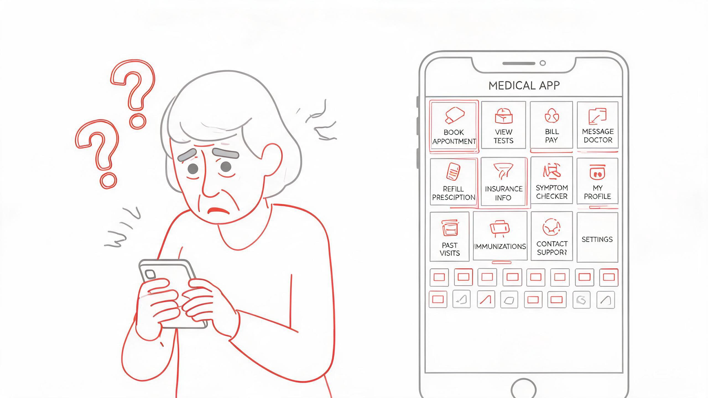
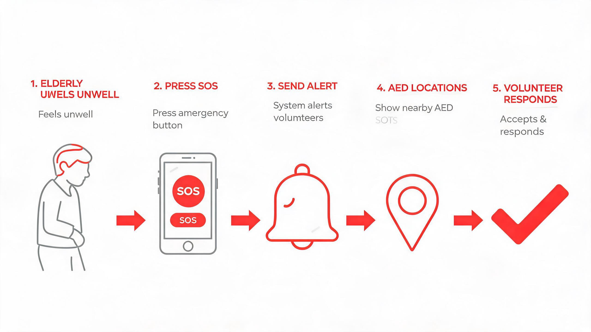
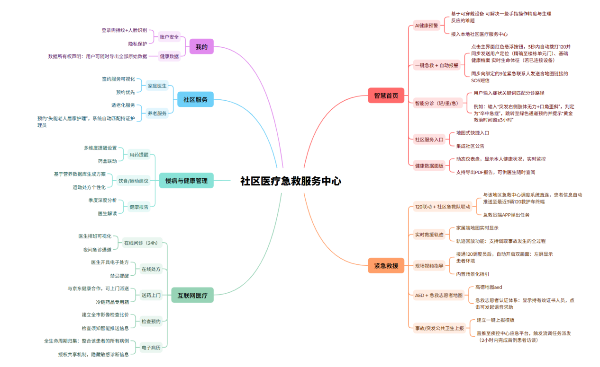
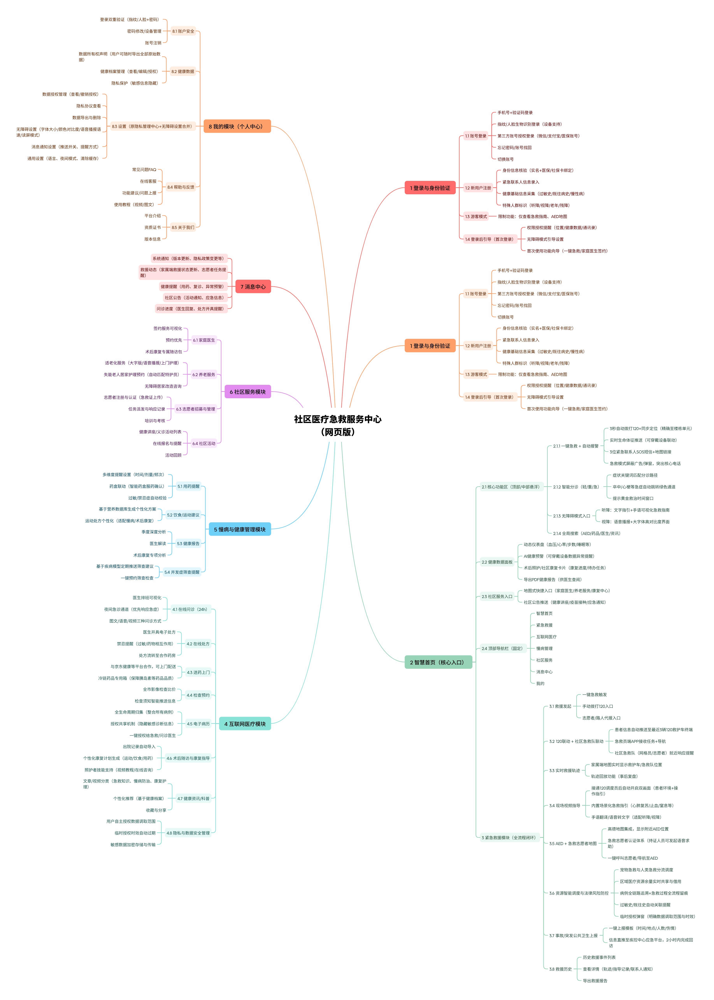
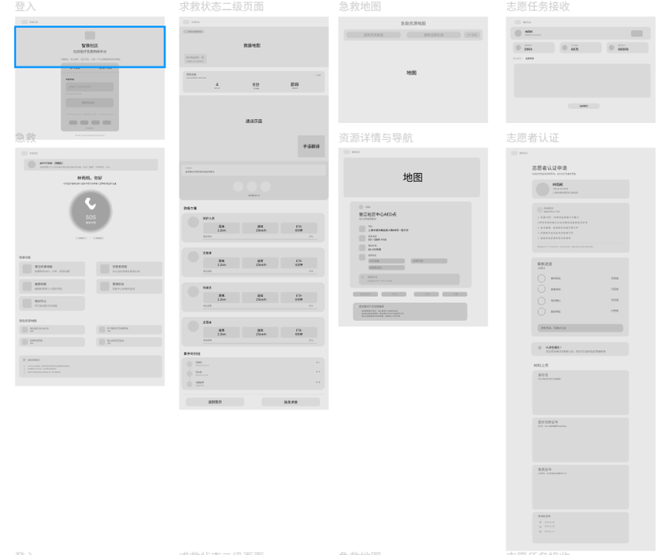
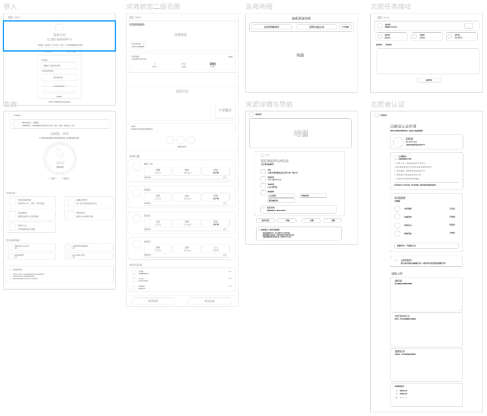
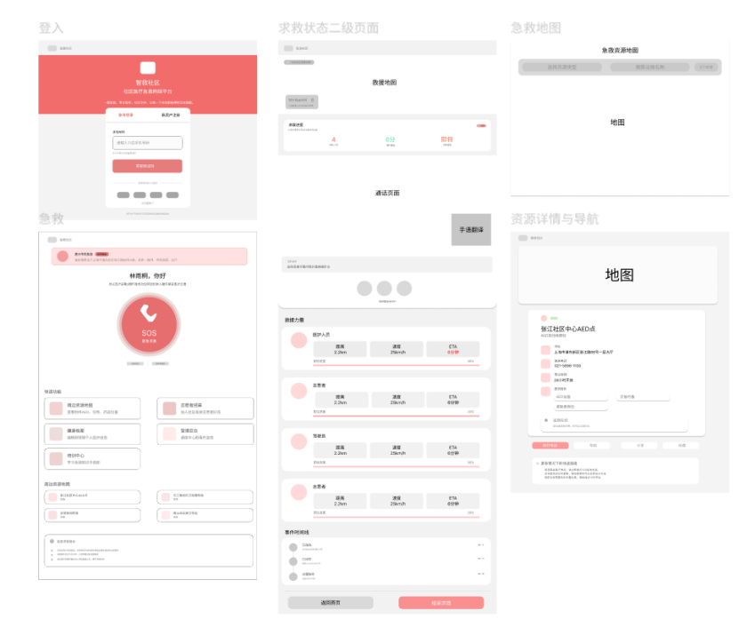
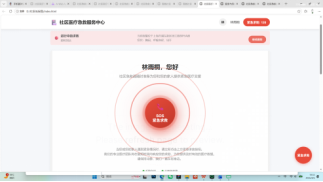
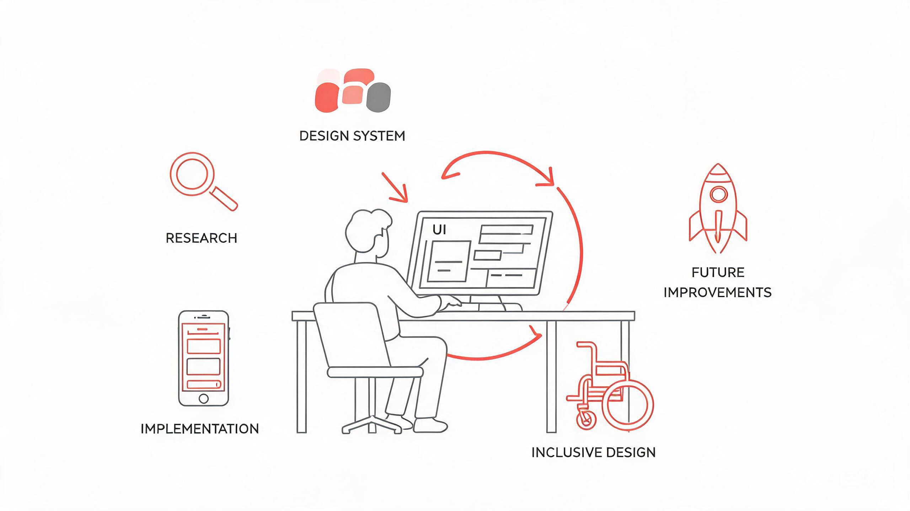

围绕"急救前 · 急救中 · 急救后"三个阶段，构建完整的用户旅程
点击左侧模块切换 · 点击右侧按钮体验真实页面
每一个决策都有明确的用户价值出发点，而不仅仅是视觉喜好
医疗红的紧迫感 + 珊瑚色的温度感，在紧急场景中传递"可信赖的行动力"，对比度达 WCAG AA。
全站 ARIA 语义化、键盘导航、跳过导航链接、焦点陷阱、高对比度模式、字体缩放，覆盖 WCAG 2.1 AA。
在 CSS Custom Properties 中定义颜色、间距、阴影、圆角等 40+ Token，与 Tailwind 双向映射，保证一致性。
Button、Badge、Modal、Input、PageHeader、EmptyState 等 6+ 可复用组件，Props API 覆盖所有业务变体。
侧边栏可折叠节省空间，Hash 路由支持静态托管，过渡动画遵循 150ms 原则，不增加认知负担。
在生命安全场景中，每个页面只传递一个主要行动。次要信息收折，不在关键时刻分散注意力。
六步完整设计流程，从用户研究到前端实现，每一步都有明确的交付物
定义三类用户，梳理核心任务流程和痛点。
18个功能页面按角色分层，紧急功能3步内可达。
全局Token与Tailwind映射，确保视觉语言一致。
从原子组件到页面级组件，保证跨页面一致性。
基于WCAG 2.1 AA，添加ARIA语义和键盘导航。
微交互反馈、空状态、骨架屏等细节打磨。
从设计到实现的全栈能力，覆盖产品完整生命周期
一页快速了解项目角色、技术栈、目标用户与核心设计目标。
| 个人角色 | 独立 UI / 交互设计师 + 前端开发实现 |
|---|---|
| 设计工具 | Figma（原型、高保真、设计系统） |
| 开发技术 | React + TypeScript + Tailwind CSS |
| 目标用户 | 社区中老年居民、持证急救志愿者、社区物业管理员 |
| 设计标准 | WCAG 2.1 AA 无障碍规范、老年适老化交互标准 |
| 项目类型 | 概念设计作品集项目（无真实后端医疗数据） |
| 核心目标 | 降低老年人紧急呼救操作门槛，提升社区突发疾病施救效率 |
轻量化社区急救响应平台，面向高龄居民与急救志愿者，解决快速呼救、AED查找与信息识别效率问题。
从问题定义到设计决策，完整展示UI设计思维链条。点击下方导航按钮快速跳转各环节。
从真实急救场景出发，深入挖掘社区中老年群体与急救志愿者双方的核心诉求。
社区中老年群体突发心梗、脑卒中等急症时，难以快速完成一键呼救，传统拨打120流程耗时过长。
附近AED设备查询路径繁琐，紧急时刻无法快速获取设备位置与导航信息。
市面急救类软件界面繁杂，信息层级混乱，紧急场景下信息识别效率极低，老年用户操作门槛高。
社区持证急救志愿者缺乏统一调度平台，无法及时响应周边紧急求助，急救资源利用率不足。

老年用户面对繁杂急救软件的操作困境
60岁以上社区常住居民，可能突发心血管、脑血管等急症，需要极简操作界面完成一键SOS呼救，同时查看附近AED设备与医疗机构信息。
持有红十字会急救证书的社区志愿者，通过后台接收周边SOS工单推送，查看求助者位置与健康信息，快速响应并前往现场施救。
智救社区定位为轻量化网页急救响应平台，兼顾居民一键呼救与志愿者工单管理双端业务闭环。采用Web技术栈降低使用门槛（无需下载App），以SOS长按交互为核心触点，串联AED资源查询、志愿者调度、急救知识普及等完整急救链路。
在调研阶段对目标用户进行了深度访谈，以下为最具代表性的真实反馈，直接驱动了核心交互方案的制定。
字太小看不清，点好几下找不到求救的按钮，急的时候手都在抖。
小区有人晕倒只能靠业主群通知，赶过去浪费很多时间，要是有个能直接接单的工具就好了。
AED 巡检记录全靠本子记，每个月统计一次特别麻烦，数据还容易丢。
以完整的急救业务闭环为骨架，以差异化设计策略为灵魂，打造真正可用、好用的急救产品体验。

急救业务全链路：从居民感知不适、志愿者响应施救，到120急救转运送医治疗的完整闭环
从11个零散问题出发，通过结构化分类与量化评估，收敛至6大中心问题，最终提炼出1个核心设计问题。
建立影响面 × 设计相关度 × 草图体现度三维评估标准，对中心问题进行量化排序，避免主观拍板。
| 中心问题 | 影响面 | 设计相关度 | 草图体现度 | 综合优先级 |
|---|---|---|---|---|
| 信息传递与获取障碍 | 高 | 高 | 中 | P0 |
| 特殊人群的急救使用排斥 | 高 | 高 | 低 | P1 |
| 资源与法律约束 | 中 | 中 | 中 | P2 |
| 隐私保护与数据安全 | 中 | 高 | 低 | P2 |
| 院后康复不足 | 低 | 中 | 低 | P3 |
| 场景多元化需求 | 中 | 高 | 中 | P2 |
如何通过全流程服务体系设计，提供连续性、人性化的体验保障？
回应用户需求：降低急救信息获取门槛，覆盖全年龄段用户
对应信息结构：建立健康数据中心，串联急救呼叫、就诊记录、康复计划
解决子问题：信息传递障碍、特殊人群排斥、场景多元化
从发散问题到收敛核心设计问题的转化过程
从功能模块切分到空间逻辑导航，引入地理邻近性与用户角色作为导航维度，建立健康数据中心作为跨模块数据总线。

问题：信息孤岛，急救场景下操作路径长，数据无法联动。

优化：数据贯通，场景化导航，减少跨模块跳转。
使用Deepseek生成4种创新信息架构方向，结合自身产品定位进行批判性采纳。
从灰度低保真原型到线框图再到初稿高保真，展示设计从概念结构到视觉落地的完整制作过程。
基于信息架构方向，使用灰度色块快速搭建低保真原型，确定核心页面流程、内容区块与交互状态，验证信息层级与布局合理性。

低保真原型 — 覆盖登录、求救、地图、志愿者等8个核心页面
在低保真基础上细化为线框图，明确组件层级、输入框样式与功能模块边界，为高保真视觉设计提供精确的结构骨架。

线框图 — 明确组件结构与交互区域
引入品牌珊瑚红主色系，完成初稿高保真视觉稿，确定色彩方向、组件样式与页面布局，为最终迭代优化奠定视觉基础。

初稿高保真 — 品牌色系落地，8个页面视觉统一
制作流程说明：低保真阶段使用灰度色块快速验证信息架构与布局逻辑 → 线框图阶段细化组件结构与交互区域 → 初稿高保真阶段引入品牌色系完成视觉落地 → 最终迭代优化至交付标准。
采用敏捷迭代管理方式，每个版本均记录迭代名称、起止时间、状态与核心变更内容，确保设计演进过程可追溯、可复盘。下图为我实际使用的迭代管理工具界面，记录了完整的版本规划与执行状态。
迭代记录列表 — 完整记录各版本名称、时间周期与执行状态
每次迭代均通过标准化表单记录关键信息，包括迭代名称、开始时间、结束时间与当前状态，保证版本管理的规范性与可追溯性。
迭代记录表单 — 标准化记录迭代名称、时间周期与状态
经过多轮迭代优化，最终落地社区医疗签约服务中心平台，实现居民急救签约、志愿者调度、资源管理等核心业务闭环，下图为我实际落地的产品界面。

迭代落地成果 — 社区医疗签约服务中心实际产品界面
迭代管理说明：每个版本迭代均经过需求评审 → 设计方案制定 → 原型验证 → 可用性测试 → 开发交付的完整闭环，确保每次迭代都有明确的交付目标与质量验证，最终实现产品从概念到落地的持续演进。
最终落地的高保真界面设计，覆盖C端居民急救与B端志愿者管理双端全场景页面。支持交互操作，可点击查看各页面流程。
点击上方原型可直接交互体验完整案例流程
基于5份真实场景任务测试卡，验证社区急救平台核心功能的可用性与操作流畅度。
将分散的设计决策点整合为可追溯的决策日志，体现专业设计师的决策透明度与结构化思维。
本文档系统性记录了智救社区的设计语言、Token 体系与可复用组件库，供设计师与开发者参考对照，确保全站视觉一致性。
主色 #e8365d（brand-600）为全站主色调，用于主按钮、高亮状态、强调文字。品牌色在无障碍高对比度模式下降级为 #b8002a。
| CSS 变量 | 色值 | 用途 |
|---|---|---|
--background | #f9fafb | 页面背景 |
--foreground | #111827 | 主文字 |
--card | #ffffff | 卡片背景 |
--primary | #e8365d | 品牌主色 |
--muted | #f3f4f6 | 弱化背景 |
--muted-foreground | #6b7280 | 次要文字 |
--border | #e5e7eb | 边框 |
--accent | #fff1f2 | 强调背景 |
interface ButtonProps {
variant?: "primary" | "secondary" | "outline" | "ghost" | "danger" | "success"
size?: "xs" | "sm" | "md" | "lg" | "xl"
loading?: boolean
leftIcon?: ReactNode
rightIcon?: ReactNode
full?: boolean
}interface BadgeProps {
variant?: "success" | "warning" | "error" | "info" | "neutral" | "brand" | "purple" | "orange"
size?: "sm" | "md"
dot?: boolean // 状态指示点
pulse?: boolean // 脉冲动画
}interface ModalProps {
open: boolean
onClose: () => void
title?: string
description?: string
size?: "sm" | "md" | "lg" | "xl"
footer?: ReactNode
}type EmptyType = "empty" | "search" | "error" | "offline"
interface EmptyStateProps {
type: EmptyType
title?: string
description?: string
action?: ReactNode
}interface StatCardProps {
label: string
value: string | number
sub?: string // 单位
icon?: ReactNode
iconBg?: string
trend?: { value: string; up: boolean | null }
onClick?: () => void
}配套组件：AccessibilityWidget 无障碍工具条，统一入口控制上述全部模式。
/login/emergency-home/emergency-card/emergency-guide/emergency-tracking/resource-map/facility-details/health-profile/medical-hub/education-hub/honor-wall/personal-center/mission-control/volunteer-application/admin-dashboard/incident-audit/incident-detail/design-system识别"隐形排斥"，覆盖听障/视障/外籍人士等边缘场景，建立多模态沟通方案与全年龄段适配标准。
在问题分类阶段即识别"无声急救场景"的系统性排斥，而非仅关注主流用户。
文字与背景对比度 ≥ 4.5:1，确保老年用户在强光/弱光环境下均可清晰阅读。
所有可点击元素最小触控区域 44px，SOS核心按钮 72px，确保精准操作。
提供"减少动画"模式选项，避免动效引起眩晕或不适。
完整的语义化标注，确保视障用户可通过辅助技术独立使用。
支持 Tab 键顺序导航与焦点环指示，焦点样式清晰可见。
内置字体大小调节面板，支持浏览器200%缩放不破版。
无障碍适老化设计 — 高对比、大控件、听觉辅助、字体缩放多维包容
以可量化的数据指标衡量设计价值，每一项成果均可追溯到具体的设计决策与可用性测试验证。
独立完成从用户调研到设计系统搭建再到双端界面落地的全流程设计实践。

全流程设计实践：从调研到落地的完整闭环
坦诚面对项目的不足之处，这些局限也是后续迭代的核心方向。
为个人概念作品，无真实后端接口，无法实现消息推送、志愿者实时联动等动态功能。
未对接线下 AED 智能设备硬件，缺少软硬件联动设计，暂无法实现设备状态实时监控。
暂未开发独立移动端 App 版本，仅 Web 网页端展示，老年用户更习惯使用原生 App。
完全不会触屏操作的老人可通过语音指令触发 SOS，进一步降低使用门槛。
新增夜间深色急救模式，降低夜间屏幕刺眼度，适配老年人夜间突发不适场景。
呼救时同步推送消息给紧急联系人，家属可实时查看施救进度与患者位置。
完善多语言版本，覆盖社区外籍居民，支持中英双语切换。
本项目聚焦社区老年院前急救细分赛道，以适老化无障碍为核心设计切入点，完整展示从用户调研、交互设计、视觉规范到前端落地全流程，为应急医疗类产品设计提供可复用解决方案。